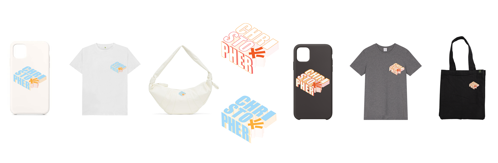

CHRISTOPHER'S COLLECTIONS
Role
Graphic Designer
Deliverable
Logos, A Poster, and An Animation
Duration
3 weeks on the entire project, 1 week for each deliverable

Project Brief
Personal logo, poster, and animation based on client’s personal statements - including his personality, experiences and expectation for this project.
Check out Christopher’s story here.
Project Goal
Expressing client’s personality through eye-catching, stylish designed deliverables based on his own experience.
The Problem
- Limited information received from the client, who also has no specific requirement for the final products
- Not able to reach out to the client directly, only able to design based on the story
Personal Logo Design
The logo is in a box-like shape inspired by Pandora’s Box. Christopher is concerned about switching to a new program since his original programs has more perspectives. Pandora’s Box creates lots of unexpected problems, just like the situations indicated in the client brief. Moreover, the last and only thing left in the Pandora’s box is “hope,” which is also the reason why I chose to use saturated colours and intense fonts for the logos
Poster Design

The posters is inspired by cyberpunk and glitch arts. There are lots of purposely distortions applied to the poster design to reflect Christopher’s uncertainty in life. The poster is based on Christopher’s past experiences as an engineering student : struggling with STEM courses and exploring what he really likes. Therefore, the colour choices for the poster are comparatively monotoned, expressing his anxiety and uncertainty.
Animation Design
The keywords of my design are intense and impressive. Thus, I picked two bright complementary colours in order to create the gradual tension. In order to create the contrast, I used a dark background colour for the first 4 seconds and replaced it with a light and bright background in pink and green afterward. I aimed to capture his transformative experience (changing his major from Engineering to a design-focused degree) through my animation. Engineering is more academic and informative compared to an arts program; thus, the background colour I used at the beginning is relatively plain and achromatic. However, designing is comparative, flexible, and energetic compared to engineering; thus, I wanted to juxtapose the neutral colour with a bright colour.